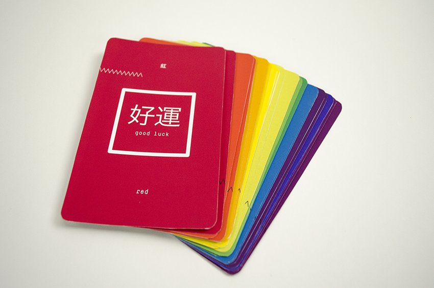
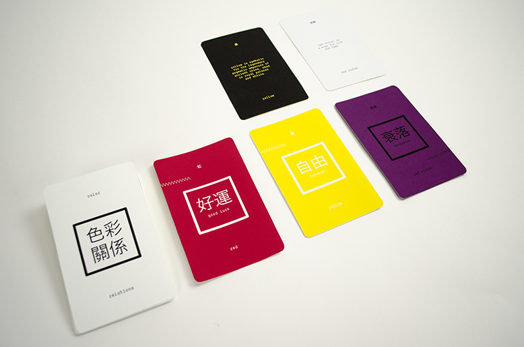
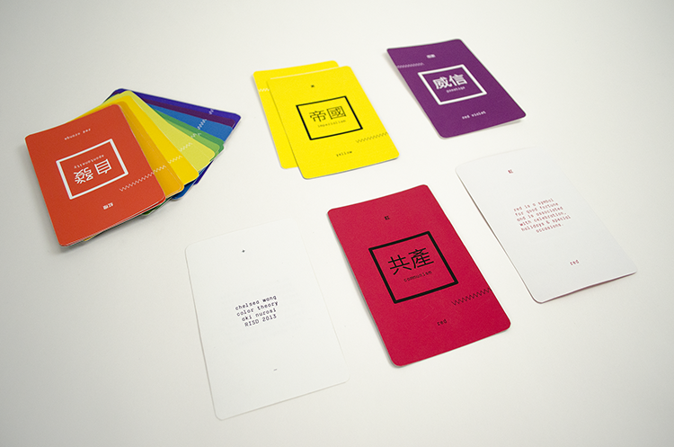
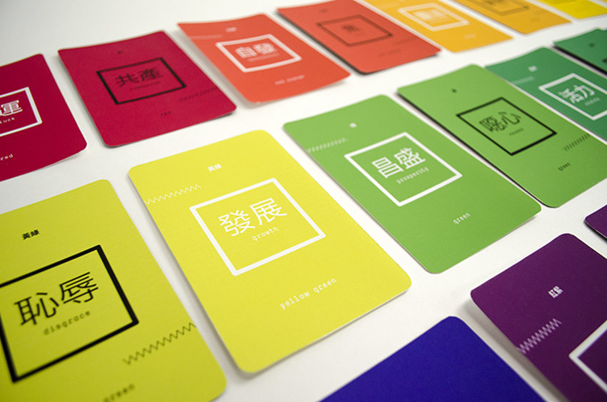

Virtues
Print, Typography
An exploration of the positive and negative associations of colors based on historical and social implications of Chinese culture. A visual investigation of how colors on the color wheel change when viewed on black and white backgrounds.
The backs of each card include positive or negative information associated with each color and virtue. The cards come with an accompanying guide that explains the relationships of each color. The target audience is an individual drawn towards color who is curious about Chinese culture and the beauty of traditional Mandarin characters.



